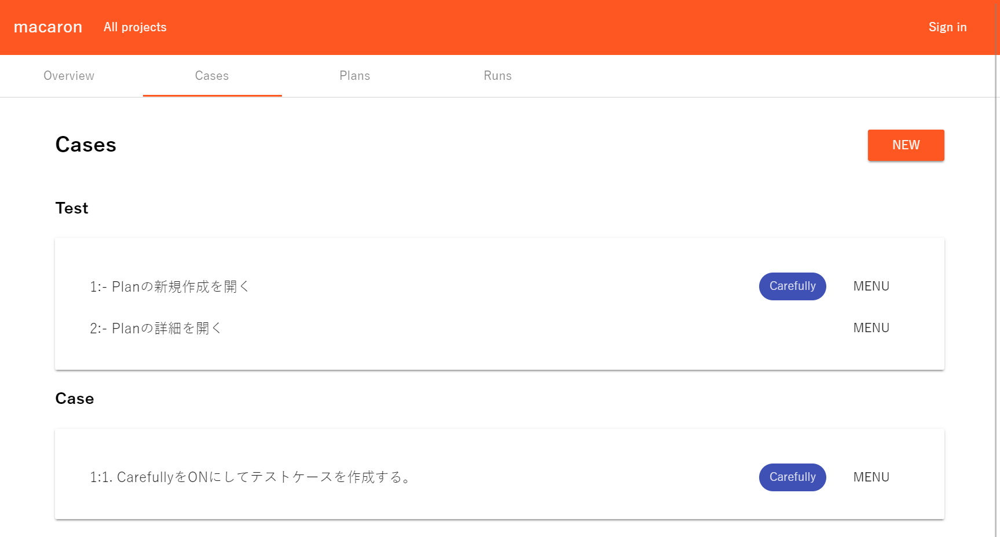
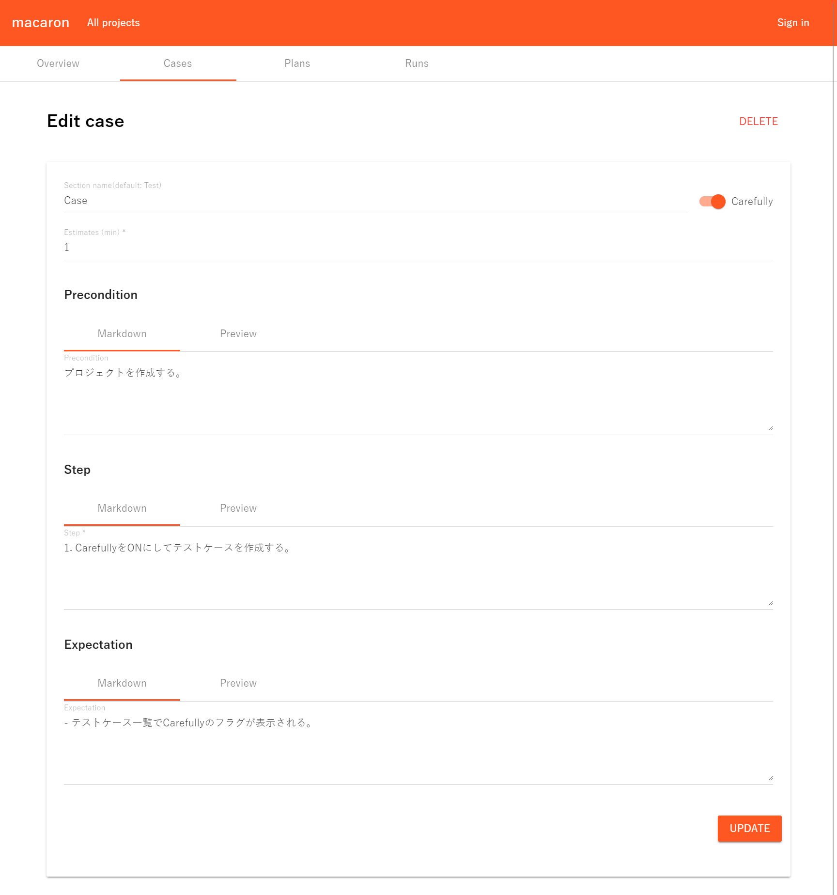
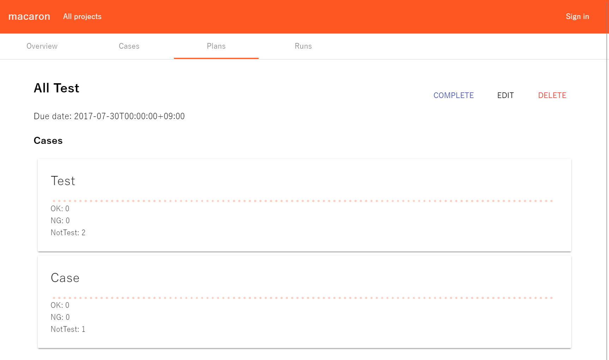
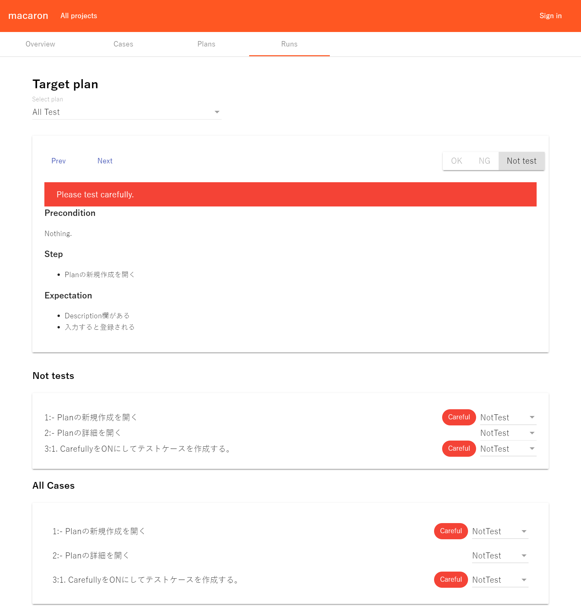

Webでテスト管理できるツールを作ろうとしている
2017-07-29 18:24:32 +0900 JST
Categories: ASP.NET Core Angular
GitHubで草を生やすために作っています。
kuluna/macaron: Test sweet tool
簡単にいうとテストケースをWeb上で作成し実施するWebアプリです。
テストケース
テスト一覧

テスト作成

テストケースを作成する項目はとてもシンプルにしています。Markdown形式で入力できるようにしています。
テスト計画

対象のテストケースが今どれぐらいテストされているのかを見る画面です。開発中なのでいろいろ雑な表示です。
テスト実施

上に現在実施中のテストが表示されて、切り替えて次々とテストを記録していく感じです。
作ってて気づいた事
このレベルならExcelでよくね？
確かに今の私の職場でもテスト仕様書はExcelで共有しています。
Excelとなるとバージョン管理が大変だったり、だれかが開いていると他の人が編集できなかったりと不便極まりないので、しばらく自分で使ってみてWebならではの良さを盛り込めていければなーと考えています。
もしWebのテスト管理で何か欲しい機能があったりしたらGitHub経由で教えていただけると大変うれしいですね。